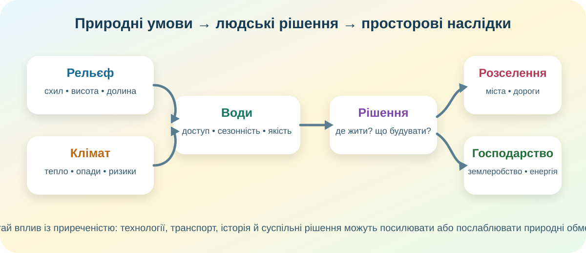

0. Стартова гіпотеза — 3 хв
Не намагайтеся одразу вгадати «правильну відповідь». Наприкінці повернемося й перевіримо, що довелося змінити.
1. Карта: природні умови не розподілені рівномірно — 5 хв
Карпати й Кримські гори створюють інший набір обмежень для доріг, забудови, землеробства й водного стоку, ніж рівнинні області.
Україна має нерівномірне водозабезпечення: частина великих промислових та південних регіонів належить до найменш забезпечених водними ресурсами.
«Природа впливає» не означає «природа все визначає». Донбас став густо заселеним не через ідеальні природні умови, а через індустріалізацію, ресурси й транспорт.
2. Кейс «Земельна ділянка на схилі» — 6 хв
3. Кейс «Вода для міста і господарства» — 5 хв
За даними ЕСУ, місцевий водний стік України в середній за водністю рік оцінюється приблизно у 52,4 км³, а в маловодний — близько 29,7 км³. Різниця величезна, а розміщення водних ресурсів і великих споживачів не збігається.
1) джерело води;
2) ризик;
3) спосіб зменшення ризику.
4. Розселення: природні умови + історія + економіка — 5 хв

У смузі лісостепу населення історично було густішим, зокрема через сприятливіші ґрунти й умови землеробства. Але пізніше індустріалізація різко змінила картину Донбасу й Придніпров’я.
Густота населення — це не «карта клімату». Це результат взаємодії природи, історії, економіки, транспорту, політики й безпеки.
5. Коротке відео — 3 хв
Подивіться фрагмент 00:32–11:12 за можливості або оберіть лише один блок: рельєф, клімат чи води.
6. Теорія після дослідження — 3 хв
Рельєф
Впливає на будівництво, транспорт, ерозію, механізацію землеробства, гідроенергетику, туризм і природні ризики.
Клімат
Визначає тепло- і вологозабезпечення, сезонність робіт, потреби в опаленні/охолодженні, ризики посух, заморозків, злив і буревіїв.
Води
Впливають на питне й промислове водопостачання, зрошення, транспорт, енергетику та розселення.
Головна ідея
Природні умови створюють можливості й обмеження, але конкретний результат залежить від рішень людей і технологій.
7. CER — 3 хв
Питання: «Чи можна пояснити сучасне розселення населення України лише природними умовами?»
8. Тест — 10 балів
9. Домашнє завдання
Джерела й інструменти
ЕСУ — Водні ресурси • ЕСУ — Населення України • OpenStreetMap • Copernicus Browser • NASA Worldview
Автор уроку: Скринченко К.А., Василівський ліцей «Сузір’я».